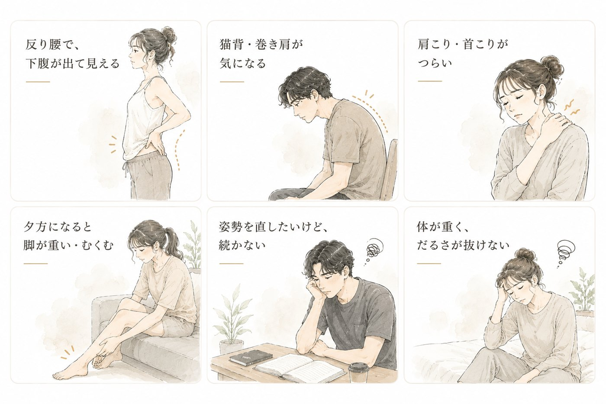

FOR YOU ／ 姿勢・軽さが気になる方へ
姿勢が、気になるあなたへ。反り腰・猫背・体の重さに。
整えてから、動かす。寝ながら、軽く・まっすぐへ。
整えてから、動かす。寝ながら、軽く・まっすぐへ。
ピラティスも整体も続かなかった——そんなあなたも、大丈夫。
VISUAL LABOは、寝ているだけで「整える」を続けられるサロンです。

猫背や反り腰の多くは、特定の筋肉が“固まって”前後のバランスが崩れた状態です。冷えて縮こまった筋肉は、いきなり動かしても伸びにくく、整いにくいといわれます。VISUAL LABOはまず高周波で深部から温め、ガチガチに縮んだ筋肉や筋膜をゆるめることから。“整える前の準備”が整うから、その後のアプローチが届きやすくなります。
姿勢を支えているのは、腹横筋や多裂筋といった体の奥のインナーマッスル。ところがこれらは、自分の意思では動かしにくく、ピラティスや筋トレでも“効かせる”のが難しい筋肉です。EMSの最大の強みは、その物理的に動かしにくいインナーマッスルに、電気で直接はたらきかけられること。自力では届かない深層の筋肉を眠ったまま起こせるから、姿勢を支える土台づくりが進みやすく、整いを感じるまでが早いといわれます。
「温めてゆるめる → 支える筋肉を動かす」というこの流れは、サイズの変化を待つより先に、“軽さ”や“姿勢”の違いとして感じやすいといわれます。デスクワークで固まった肩・背中がほぐれ、お腹に自然と力が入りやすくなる——その手応えが、通い続けるモチベーションになります。※体感・変化には個人差があります
「続かない」を、責めなくていい。
姿勢のクセは、毎日の積み重ね。だからこそ、続けられる方法が大切です。横になるだけで整えられる場所で、無理なく。※コンディショニングを目的とし、医療行為ではありません。気になる症状は医療機関へ。
初回体験は、BODY MAINTENANCE MENU 90（90分・¥3,000〜）。
高周波で温め、手技でほぐし、EMSで動かす本格ケアです。
痩せたい方も。姿勢が気になる方も。
どちらも、温める→動かすの同じケアで。
ご相談でいちばん多い「反り腰」と「猫背・巻き肩」。原因と整え方を、詳しく解説しています。